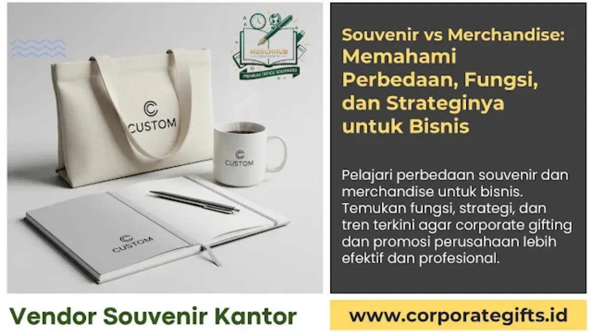

Corporate Gifts ID - Perbedaan souvenir dan merchandise terletak pada tujuan strategis dan sasaran audiens penerimanya: souvenir adalah cinderamata bernilai personal dan eksklusif yang diberikan kepada klien, mitra bisnis, atau karyawan sebagai bentuk apresiasi dan pengikat relasi jangka panjang, sedangkan merchandise adalah barang promosi fungsional yang diproduksi massal untuk memperluas jangkauan brand awareness kepada publik luas.
Banyak perusahaan masih mencampuradukkan kedua konsep ini dalam perencanaan anggaran pengadaan. Padahal, kekeliruan dalam menempatkan jenis barang cinderamata dapat menyebabkan alokasi dana promosi menjadi kurang efektif dan target branding tidak tercapai secara optimal.
Poin Kunci Perbedaan Souvenir vs Merchandise:
- Orientasi Tujuan: Souvenir berfokus pada penguatan hubungan (relationship building) dan apresiasi, sedangkan merchandise berfokus pada konversi penjualan dan eksposur brand.
- Segmentasi Penerima: Souvenir ditujukan untuk segmen spesifik (klien VIP, mitra B2B, eksekutif, karyawan teladan), sementara merchandise ditujukan untuk audiens massal dan prospek baru.
- Standar Kualitas & Kemasan: Souvenir menonjolkan sentuhan personal, material premium (kulit PU, kayu, stainless SUS 304), dan hardbox magnetik; merchandise mengutamakan kepraktisan serta efisiensi biaya unit.
- Skala Distribusi: Souvenir dibagikan pada momentum tertentu (ulang tahun perusahaan, sertijab, hari raya); merchandise dibagikan secara berkala dalam pameran, aktivasi event, atau roadshow.
Pentingnya Membedakan Souvenir dan Merchandise dalam Bisnis
Dalam ekosistem komunikasi pemasaran korporat modern, setiap materi promosi fisik yang disentuh oleh audiens merefleksikan identitas dan reputasi perusahaan. Memberikan produk promosi massal bernilai rendah kepada klien strategis dapat menurunkan impresi profesionalisme bisnis Anda. Sebaliknya, membagikan hadiah eksekutif yang sangat mahal kepada ribuan peserta seminar umum akan menguras anggaran tanpa memberikan return on investment (ROI) yang terukur.
Oleh karena itu, mengklasifikasikan kebutuhan pengadaan antara souvenir kantor eksklusif dan merchandise promosi perusahaan adalah langkah awal yang krusial sebelum menyusun rencana anggaran biaya (RAB).
Definisi dan Batasan Konseptual
Meskipun sama-sama berupa objek fisik berlogo perusahaan, keduanya memiliki batasan filosofis dan operasional yang berbeda nyata:
Apa itu Souvenir Perusahaan (Corporate Gift)?
Souvenir perusahaan (sering disebut sebagai corporate gift atau kenang-kenangan resmi) adalah barang cinderamata yang dirancang untuk menyampaikan rasa terima kasih, menghargai loyalitas, atau merayakan pencapaian bersama. Ciri utama souvenir terletak pada eksklusivitasnya, sentuhan personalisasi (seperti grafir nama penerima), serta kemasan presentasi yang elegan.
Apa itu Merchandise Bisnis (Promotional Products)?
Merchandise bisnis (atau promotional merchandise) adalah produk bermerek dagang yang diproduksi dalam kuantitas besar untuk tujuan pemasaran langsung. Tujuannya adalah menciptakan impresi visual berulang di ruang publik agar logo dan nama perusahaan semakin familiar di benak calon konsumen.

Kombinasi kurasi gift set souvenir premium dan merchandise promosi berdesain modern untuk mendukung aktivasi merek korporat.
Tabel Komparasi Menyeluruh Souvenir vs Merchandise
Tabel matriks berikut membedakan secara mendalam karakteristik utama dari kedua instrumen branding tersebut:
| Aspek Pembeda | Souvenir Perusahaan (Corporate Gift) | Merchandise Bisnis (Promotional Swag) |
|---|---|---|
| Tujuan Utama | Membangun loyalitas, apresiasi kemitraan, dan kenang-kenangan berkesan | Meningkatkan brand awareness, leads generation, dan promosi produk |
| Target Penerima | Klien kunci, mitra B2B, dewan direksi, pemangku kepentingan VIP, karyawan | Konsumen umum, pengunjung expo pameran, peserta webinar massal, prospek baru |
| Standar Kualitas | Material premium, awet bertahun-tahun, finishing halus, berstandar tinggi | Fungsional, praktis dipakai harian, mengutamakan efisiensi biaya unit |
| Nilai Emosional | Tinggi, menciptakan rasa dihargai (valued) dan ikatan relasi personal | Fokus pada daya tarik visual, kebanggaan komunitas, dan fungsi pakai |
| Skala & Frekuensi Distribusi | Terbatas pada momen istimewa (anniversary, MoU, akhir tahun, sertijab) | Distribusi massal dan berkelanjutan sepanjang periode kampanye promosi |
| Penempatan Logo (Branding) | Subtle dan elegan (grafir laser kecil, deboss halus, monogram discreet) | Terlihat jelas dan kontras (sablon logo besar, warna brand mencolok) |
| Contoh Produk Populer | Smart tumbler SUS 304 grafir nama, wireless powerbank set, agenda kulit premium | Kaos promosi, tote bag kanvas/blacu, pulpen plastik, gantungan kunci, topi |
Peran dan Fungsi Souvenir dalam Hubungan Kemitraan
Dalam konteks bisnis B2B, souvenir bukan sekadar hadiah seremonial, melainkan investasi strategis yang menjalankan sejumlah fungsi penting:
- Memperkuat Hubungan Kemitraan: Memberikan apresiasi yang tepat waktu meningkatkan rasa saling percaya antara korporasi dan mitra strategis.
- Representasi Martabat Brand: Kualitas barang yang tinggi secara tidak langsung mengomunikasikan standar keunggulan operasional perusahaan Anda.
- Menciptakan Kesan Eksklusif yang Bertahan Lama: Cinderamata yang dipersonalisasi cenderung disimpan di atas meja kerja eksekutif, memberikan impresi brand harian.
Peran dan Fungsi Merchandise dalam Strategi Pemasaran
Di sisi lain, merchandise memegang peranan krusial sebagai ujung tombak aktivasi promosi pemasaran:
- Memperluas Jangkauan Audiens Organik: Ketika konsumen memakai kaos atau membawa tote bag berlogo perusahaan di ruang publik, mereka secara sukarela bertindak sebagai brand ambassador berjalan.
- Mendukung Kampanye Produk Baru: Merchandise berfungsi sebagai insentif menarik untuk mendorong transaksi pertama atau pendaftaran program keanggotaan.
- Membangun Komunitas Pengguna Loyal: Merchandise bernilai estetik tinggi memicu kebanggaan komunitas bagi pelanggan setia brand Anda.
Panduan Memilih: Kapan Menggunakan Souvenir atau Merchandise?
Untuk memastikan alokasi anggaran berjalan efektif, gunakan panduan praktis pengambilan keputusan berikut:
- Gunakan Souvenir Eksklusif Saat:
- Menjalin kesepakatan kontrak bisnis baru atau serah terima jabatan (sertijab).
- Memberikan apresiasi tahunan kepada klien prioritas dan dewan komisaris.
- Merayakan tonggak sejarah ulang tahun instansi (corporate anniversary).
- Gunakan Merchandise Promosi Saat:
- Mengikuti ajang pameran dagang (trade expo), seminar umum, atau job fair.
- Menyelenggarakan program giveaway di media sosial atau roadshow edukasi.
- Mendukung kampanye peluncuran produk konsumen ke pasar retail.
Tren Terkini Corporate Gifting dan Merchandise 2026
Memasuki tahun 2026, preferensi korporat terhadap cinderamata mengalami pergeseran signifikan:
- Keberlanjutan Lingkungan (Eco-Friendly Sustainability): Permintaan produk berbasis bambu alami, tumbler stainless steel bebas BPA, dan tote bag katun daur ulang terus meningkat seiring penerapan tata kelola ESG di berbagai korporasi.
- Integrasi Teknologi Modern: Item fungsional seperti fast-charging wireless pad, bluetooth speaker mini, dan flashdisk OTG multifungsi menjadi primadona cinderamata modern.
- Strategi Hybrid Tiering: Penggabungan paket merchandise massal untuk peserta reguler dan gift set VIP eksklusif untuk pembicara utama dalam satu event yang terkoordinasi.
Kesimpulan dan Rekomendasi Pengadaan Terpadu
Souvenir dan merchandise bukanlah dua hal yang saling meniadakan, melainkan dua instrumen pelengkap dalam strategi komunikasi bisnis Anda. Dengan memahami perbedaan fungsi, target, dan momentum distribusinya, perusahaan Anda dapat merancang strategi gifting yang hemat biaya, tepat sasaran, dan memberikan dampak branding yang nyata.
Untuk melihat berbagai pilihan paket souvenir dan merchandise terkurasi, silakan telusuri katalog produk Corporate Gifts ID atau konsultasikan konsep kustomisasi Anda bersama tim spesialis kami.